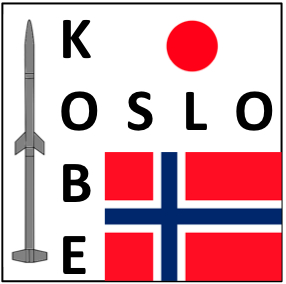
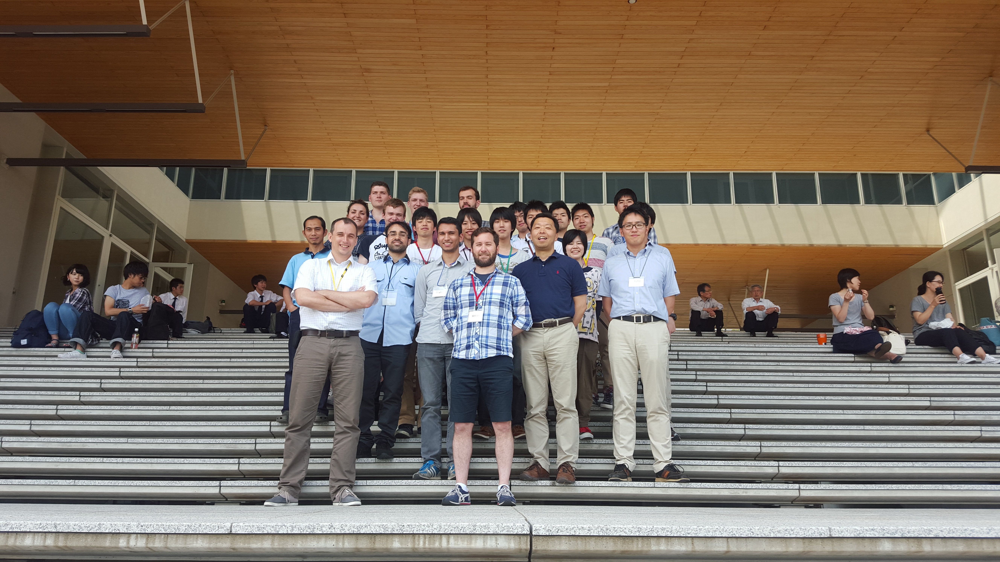

The Japanese-Norwegian Partnership in Space Simulations between the University of Oslo and Kobe University provides a unique study opportunity for students interested in space science and numerical modeling. The Kobe-Oslo project is centered on numerical simulations of space related problems, such as interaction between sounding rockets and plasma, cometary environment, asteroids and lunar surfaces, or plasma turbulence. Participating students learn how to use and create large scale numerical models, run them on supercomputers, and relate their results to ongoing space missions. The workshops are biannual, one in Norway and one in Kobe, Japan. Picture below from the first workshop in Kobe, in June 2015.
The Kobe-Oslo project is funded through the UTFORSK 2016 Partnership Programme administered by the Norwegian Centre for International Cooperation in Education (SIU).
